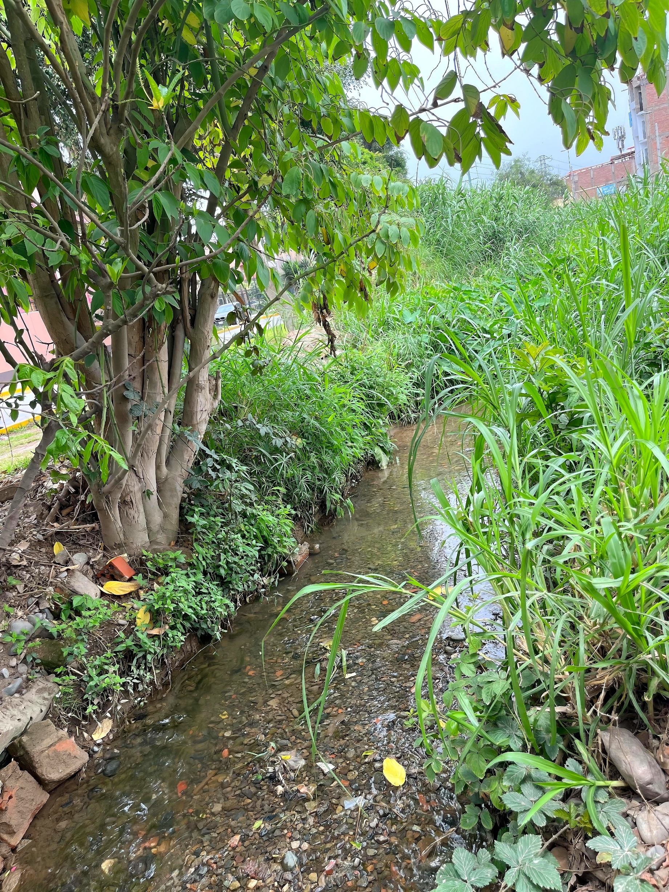

Limpieza de cauce y áreas aledañas
Retiro coordinado de residuos sólidos, plásticos y desechos acumulados tanto en el lecho del río como en los bordes y zonas de tránsito cercanas.

Ríos de Vida · Recuperación hídrica y comunitaria
Unidos por un Surco más limpio y verde: cuidemos juntos nuestro río, recuperando el cauce, las áreas aledañas y el vínculo de la comunidad con el entorno.
El desafío territorial
El Proyecto Río Surco se desarrolla como nodo piloto del eje hídrico Ríos de Vida, enfocándose en el tramo comprendido a lo largo de la Av. Paseo de la Castellana, entre la Vía Expresa y el Jr. Combate de Angamos.
El río Surco forma parte de nuestra comunidad y de nuestro futuro: mantenerlo limpio, sin basura y con más vida no solo embellece la ciudad, sino que protege la biodiversidad local y fortalece la corresponsabilidad vecinal.
Mediante jornadas participativas de limpieza de cauce y áreas aledañas, pintado de carteles de sensibilización y cuidado y conservación del entorno, buscamos frenar la acumulación de residuos y devolver presencia viva al recorrido urbano.
Primer nodo hídrico activo dentro de la articulación FAS y ALEBO en Lima.
Corredor a lo largo de Av. Paseo de la Castellana, entre Vía Expresa y Jr. Combate de Angamos.
Limpieza de cauce y áreas aledañas, pintado de carteles de sensibilización y conservación del entorno.
Qué haremos
Retiro coordinado de residuos sólidos, plásticos y desechos acumulados tanto en el lecho del río como en los bordes y zonas de tránsito cercanas.
Elaboración y colocación de mensajes visibles y pedagógicos que invitan a vecinos y transeúntes a no arrojar basura y respetar el río.
Seguimiento continuo del espacio recuperado, protección de la vegetación ribereña y prevención de nuevos puntos críticos de acumulación.
Convocatoria abierta a voluntarios, vecinos e instituciones para sostener un Surco más limpio, sin basura y con más vida.
Dinámica de jornada
Identificar puntos de acumulación y condiciones del tramo.
Sumar voluntarios y aliados locales con seguridad.
Retirar residuos del cauce y áreas aledañas.
Pintar y ubicar carteles de cuidado ambiental.
Dar seguimiento y promover el cuidado cotidiano.
Vida y entorno
El río Surco es parte de nuestra comunidad y de nuestro futuro. Cuando el cauce y sus bordes se liberan de basura, el entorno mejora de inmediato para quienes caminan y habitan cerca del tramo.
Un río limpio no solo embellece la ciudad: también protege la vida de distintas especies asociadas a los espacios verdes y fluviales urbanos y sienta bases para una recuperación ecológica más amplia.
Cada jornada busca pasar de la limpieza puntual al cuidado compartido del entorno, sumando manos para que el tramo entre Vía Expresa y Jr. Combate de Angamos se mantenga limpio, sin basura y con más vida.
Participación
Súmate a las próximas jornadas de limpieza, pintado de carteles y cuidado del entorno en el tramo de Av. Paseo de la Castellana. Tu participación ayuda a mantener el río limpio y a sumar más personas a la causa.
Escríbenos para conocer las fechas, puntos de encuentro y formas de apoyar en campo o difusión.
Galería


Ríos de Vida · Legado Botánico
Sigamos sumando manos para mantener el río Surco limpio, sin basura y con más vida.
← Volver a Programas